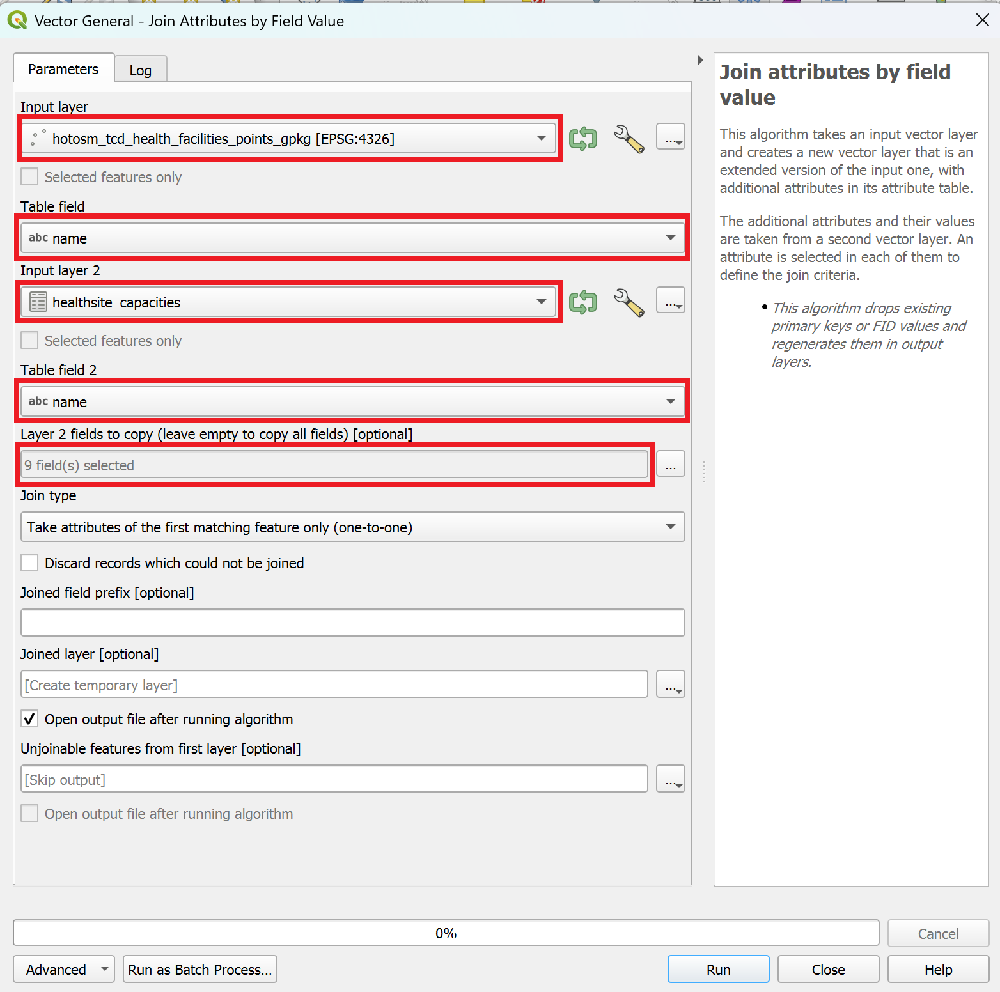
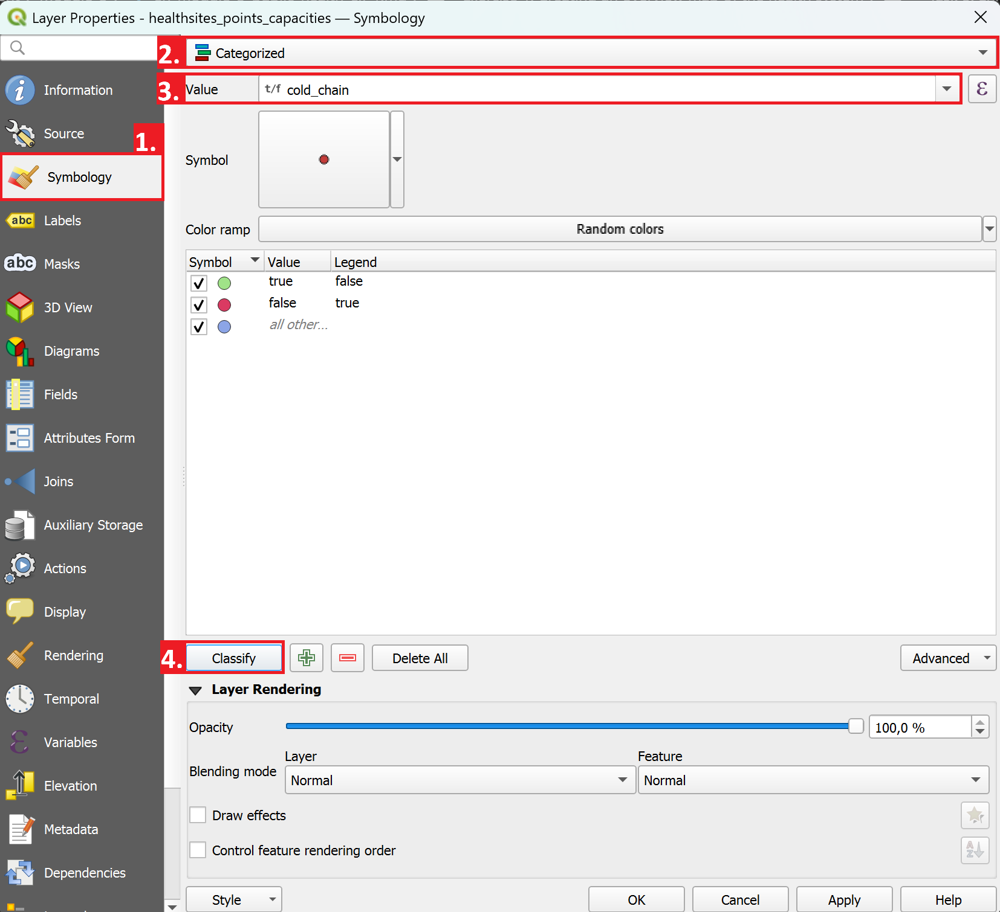

Exercise 1: Creating an overview map of the health system#
Background#
Over the past month, health authorities in Chad have reported a surge in measles cases, particularly in Mandoul, Mayo-Kebbi Est, and Logone Oriental regions. The surveillance unit has provided line-list data and existing health facility data. Your first task is to create a base map showing health facility distribution and classify them by service capacity to understand the available response infrastructure.
Available Data#
Dataset name |
Original title |
Publisher |
Downloaded from |
|---|---|---|---|
|
Chad Subnational Administrative Boundaries (level 0: country) |
United Nations Office for the Coordination of Humanitarian Affairs (OCHA) |
|
|
Chad Administrative Boundaries (level 1: regions) |
United Nations Office for the Coordination of Humanitarian Affairs (OCHA) |
|
|
Chad Administrative Boundaries (level 2: province) |
United Nations Office for the Coordination of Humanitarian Affairs (OCHA) |
|
|
Chad Health Facilities (OpenStreetMap Export) |
Humanitarian OpenStreetMap Team |
|
|
Healthsite Capacities |
HeiGIT |
This is a fictional dataset generated for the purpose of this exercise. |
Tasks#
Task 1: Creating a new QGIS project#
Open QGIS and create a new project.
Save the project via
Project→Save As.... Navigate to the folder for this training and save it in the/projectsubfolder. Give it a nam and clickSave.
Task 2: Importing the datasets#
Import the following datasets via drag-and-drop:
tcd_admbnda_adm0_20250212_AB.shptcd_admbnda_adm1_20250212_AB.shptcd_admbnda_adm2_20250212_AB.shp
The file
hotosm_tcd_health_facilities_points.csvcontains point data, but it is in a delimited text format. QGIS won’t automatically recognise the geographic information and display the dataset as points. We need to import it as a delimited text layer:In the top bar, click on
Layer→Add Layer→Add Delimited Text Layer.... A new window will open. Here we need to specify the file, the file format and define the geometry informationTo the right of the
File name-field, click on the three points to open the file browser.
three points to open the file browser.Navigate to the data input folder and select the file
hotosm_tcd_health_facilities_points.csv. ClickOpen.Make sure that QGIS uses the correct delimiter (e.g., comma, tab, semicolon, etc.). If it is the correct delimiter, a preview of the datatable should appear in the Sample Data field.
Specify the
X-andY-fieldby selecting the respective column.Click
Add. The healthsites should now appear as points on your map canvas.
Let’s add a basemap:
In the file browser, scrool down until you see
XYZ-TilesUncollapse it and double-click
Caution
Imported files are not saved within the QGIS project. If you move or delete the original file, QGIS will no longer find the respective dataset.
Task 3: The layers panel and the layer concept#
Once we’ve imported all the relevant layers, lets start by arranging the layers logically so we can work with them more easily. On the left, there is the
Layers-panel. Here you can see all the datasets we’ve imported so far.QGIS displays geodata in layers, where each dataset is represented in one layer. The layers are stacked on top of each other.
Lets arrange the layers so we work with them more easily:
The ADM0-layer should go at the bottom, followed by ADM1, then ADM2.
The healthsites should go on top.
Lets investigate the layers that we have added so far. Each vector layer has an attribute table, where each row represents a geometric feature on the map canvas.
Open the attribute table by right-clicking on the ADM2 layer in the layers panel on the left →
Open Attribute Table.A new window will open. This is the attribute table. It shows the vector layer in a tabular format, allowing you to see the attribute values, sort the table, and edit the values using the tools in the top bar.
Take a look at the different columns in the attribute table. What do they show?
Try sorting the attribute table by clicking on the

Open the attribute table for the layer
hotosm_tcd_health_facilities_pointsand familiarise yourself with the data.
Task 4: Enriching the Healthsites dataset#
In this step, we want to enrich the layer containing the healthsites with additional data on the capacity of the healthsites. The layer Healthsite_capacities.csv contains information about the bed capacity in the pediatric care unit as well as the cold chain capacity. This information is valuable to identify the capacity of the health sector to treat acute measles cases and coordinate a vaccination campaign. However, the dataset does not contain any geographic coordinates, so QGIS can’t
Gathering the information on capacities
In a realistic scenario, these data might have been collected during a rapid facility assessment led by the Ministry of Health and Red Cross volunteers. Because data collection was decentralised and partially paper-based, some facility names differ slightly across datasets (e.g., spelling variants, abbreviations). When performing joins, pay attention to such inconsistencies.
Let’s import the
Healthsite_capacities.csvinto your QGIS project:In the top bar, navigate to
Layer→Add Layer→Add Delimited Text Layer...To the right of the
File name-field, click on the three points and navigate to the data/input/healthsite_capacities.csvfile and clickOpen.In the import window, you will see sample data in the sample data field. Take a look at the columns and data available. What kind of data is present in each column? Unfortunately, there are no coordinates for the individual healthsites.
There are no columns with the coordinates in this datatable. Under
Geometry DefinitionselectNo geometry (attribute only table).Click
Add. The layer will appear in your layers tab as a data table, but will not be shown in the map canvas.
Let’s investigate the capacities table further.
Right-click on the layer and open the attribute table.
In the top bar, you can see how many entries the dataset contains (148 features)
The datatable includes a column called “name” which contains the name of the health facilities. These names are the same names that are also stored in the healthsites point layer we imported earlier.
This means that we can join both tables using the attribute values of the “name”-column.
In the processing toolbox, search for the tool
Join attributes by field valueand open it by double-clicking on it.A new window will open. Here we can specify the parameters for the
Join attributes by field value-tool.

Setting the parameters for the “Join Attributes by field value”-tool.#
As “Input layer”, select the layer
hotosm_tcd_health_facilities_points.Under “Table field”, select
name.As “Input layer 2”, select
healthsite_capacities.Under “Table field 2”, select
name.Under “Layer 2 fields to copy”, we can select which columns we want to copy. Click on the
three dots to the right of the field and select cold_chain,measles_vaccination,measles_treatment,beds_total,pediatric_beds,staff_total, andremarks. Then, clickOK.Finally, to execute the algorithm, click on
Run.
Note
After running the algorithm, the window will switch to the log file. Here you can see if the algorithm encountered any problem. In our case, we can see that 149 features were successfully joined while 183 features were unable to be joined. This happens when the identifying value (Table field) is not present in the respective column in layer 2. This can be either because there is not data available, or because there are inconsistencies in the identifying value (e.g., typos, different spelling).
After reviewing the log, we can close the tool-window. A new layer called
Joined layershould appear in your layers panel. Rename it to “Healthsites_points_capacities” and move it to the top.
{kind=link}
We now have a new point layer with the capacities of relevant healthsites. With this information, we can create a map showing the capacities of the health sector.
Task 5: Cleaning the Healthsite Data#
Let’s take a look at the new layer by opening the attribute table.
Right-Click on the layer and open the attribute table.
In the attribute table, if you scroll to the right, you will see the new columns with the information we added using the “join attributes by field value”-tool.
Sort the attribute table for the new columns. As you can see, not every feature has information about the capacity.
We can remove the healthsites without additional information, as they are already available in the original dataset.
Sort the
total_bedscolumn ascendingly, so the features with “NULL”-values appear at the top.Click on row column (on the left), and select the first feature. If selected, the feature should appear blue.
Now scroll down until you see the first feature with a value different then “NULL” in the
total_bedscolumn.Hold Shift and click on the row number of the last feature with the value NULL.
In the toolbar of the attribute table, click on the

Toggle Editing Mode-button to enter the editing mode for the attribute table.Next, click on
Delete selected featuresto delete the points with no capacity information.Click on
to save and exit the editing mode.
Task 6: Classifying the Healthsites#
Now, we can classify the healthsites points to indicate which healthsites have a cold chain in order to store measles vaccines.
Right-click on the
Healthsites_points_capacitiesand selectProperties. A new window will open.On the left, navigate to the symbology-tab.

Classifying the symbology for the healthsites in QGIS 3.40#
Instead of
Single Symbol, selectCategorisedas the visualisation method.As “Value”, select
cold_chainNext, click on
Classify.If you want, you can adjust the symbology for the classes by double clicking on one.
Click
Apply, then close the properties window.
{kind=link}
Great, now
Task 7: Adding the Road Networks#
Import the roads dataset `
Now, lets configure the “Project Home” in the browser panel.
In the browser panel on the left, right-click on
Project Home→Set Project Home...and set the project home folder to the training folder (with the subfolders/data,/project, etc.). Now you will be able to access all the datasets for this training through the browser.
Note
Working with the browser panel allows a much quicker access to the files and keeps the folder view organised when working with shapefiles.